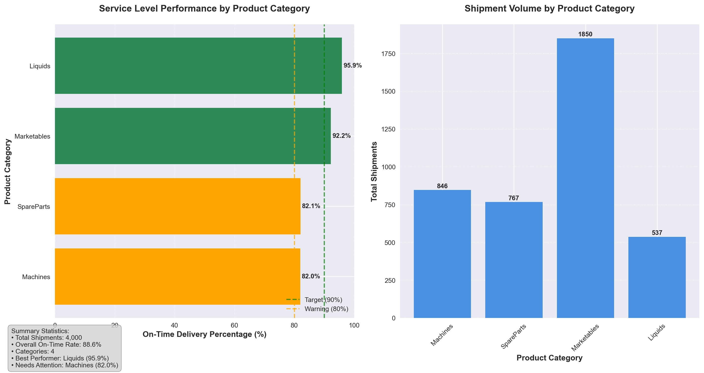

Complete all discussion questions for the seven mental models (plus some extra requirements for higher grades)
Important🎯 Note on Python Usage
Recommended Workflow: Use Your Existing Virtual Environment If you completed the Tech Setup Challenge Part 2, you already have a virtual environment set up! Here’s how to use it for this new challenge:
Clone this new challenge repository (see Getting Started section below)
Open the cloned repository in Cursor
Set this project to use your existing Python interpreter:
Press Ctrl+Shift+P → “Python: Select Interpreter”
Navigate to and choose the interpreter from your existing virtual environment (e.g., your-previous-project/venv/Scripts/python.exe)
Activate the environment in your terminal:
Open terminal in Cursor (`Ctrl + ``)
Navigate to your previous project folder where you have the venv folder
💡 Pro tip: You can quickly navigate by typing cd followed by dragging the folder from your file explorer into the terminal
Activate using the appropriate command for your system:
Windows Command Prompt:venv\Scripts\activate
Windows PowerShell:.\venv\Scripts\Activate.ps1
Mac/Linux:source venv/bin/activate
You should see (venv) at the beginning of your terminal prompt
Install additional packages if needed:pip install pandas numpy matplotlib seaborn
Warning⚠️ Cloud Storage Warning
Avoid using Google Drive, OneDrive, or other cloud storage for Python projects! These services can cause issues with: - Package installations failing due to file locking - Virtual environment corruption - Slow performance during pip operations
Best practice: Keep your Python projects in a local folder like C:\Users\YourName\Documents\ or ~/Documents/ instead of cloud-synced folders.
Alternative: Create a New Virtual Environment If you prefer a fresh environment, follow the Quarto documentation: https://quarto.org/docs/projects/virtual-environments.html. Be sure to follow the instructions to activate the environment, set it up as your default Python interpreter for the project, and install the necessary packages (e.g. pandas) for this challenge. For installing the packages, you can use the pip install -r requirements.txt command since you already have the requirements.txt file in your project. Some steps do take a bit of time, so be patient.
Why This Works: Virtual environments are portable - you can use the same environment across multiple projects, and Cursor automatically activates it when you select the interpreter!
The Problem: Mastering Data Manipulation Through Method Chaining
Core Question: How can we efficiently manipulate datasets using pandas method chaining to answer complex business questions?
The Challenge: Real-world data analysis requires combining multiple data manipulation techniques in sequence. Rather than creating intermediate variables at each step, method chaining allows us to write clean, readable code that flows logically from one operation to the next.
Our Approach: We’ll work with ZappTech’s shipment data to answer critical business questions about service levels and cross-category orders, using the seven mental models of data manipulation through pandas method chaining.
Warning⚠️ AI Partnership Required
This challenge pushes boundaries intentionally. You’ll tackle problems that normally require weeks of study, but with Cursor AI as your partner (and your brain keeping it honest), you can accomplish more than you thought possible.
The new reality: The four stages of competence are Ignorance → Awareness → Learning → Mastery. AI lets us produce Mastery-level work while operating primarily in the Awareness stage. I focus on awareness training, you leverage AI for execution, and together we create outputs that used to require years of dedicated study.
The Seven Mental Models of Data Manipulation
The seven most important ways we manipulate datasets are:
Assign: Add new variables with calculations and transformations
Subset: Filter data based on conditions or select specific columns
Drop: Remove unwanted variables or observations
Sort: Arrange data by values or indices
Aggregate: Summarize data using functions like mean, sum, count
Merge: Combine information from multiple datasets
Split-Apply-Combine: Group data and apply functions within groups
Data and Business Context
We analyze ZappTech’s shipment data, which contains information about product deliveries across multiple categories. This dataset is ideal for our analysis because:
Real Business Questions: CEO wants to understand service levels and cross-category shopping patterns
Multiple Data Sources: Requires merging shipment data with product category information
Complex Relationships: Service levels may vary by product category, and customers may order across categories
Method Chaining Practice: Perfect for demonstrating all seven mental models in sequence
Data Loading and Initial Exploration
Let’s start by loading the ZappTech shipment data and understanding what we’re working with.
import pandas as pdimport numpy as npimport matplotlib.pyplot as pltimport seaborn as snsfrom datetime import datetime, timedelta# Load the shipment datashipments_df = pd.read_csv("https://raw.githubusercontent.com/flyaflya/persuasive/main/shipments.csv", parse_dates=['plannedShipDate', 'actualShipDate'])# Load product line dataproduct_line_df = pd.read_csv("https://raw.githubusercontent.com/flyaflya/persuasive/main/productLine.csv")# Reduce dataset size for faster processing (4,000 rows instead of 96,805 rows)shipments_df = shipments_df.head(4000)print("Shipments data shape:", shipments_df.shape)print("\nShipments data columns:", shipments_df.columns.tolist())print("\nFirst few rows of shipments data:")print(shipments_df.head(10))print("\n"+"="*50)print("Product line data shape:", product_line_df.shape)print("\nProduct line data columns:", product_line_df.columns.tolist())print("\nFirst few rows of product line data:")print(product_line_df.head(10))
Shipments Data: Contains individual line items for each shipment, including: - shipID: Unique identifier for each shipment - partID: Product identifier - plannedShipDate: When the shipment was supposed to go out - actualShipDate: When it actually shipped - quantity: How many units were shipped
Product Category and Line Data: Contains product category information: - partID: Links to shipments data - productLine: The category each product belongs to - prodCategory: The category each product belongs to
Business Questions We’ll Answer: 1. Does service level (on-time shipments) vary across product categories? 2. How often do orders include products from more than one category?
The Seven Mental Models: A Progressive Learning Journey
Now we’ll work through each of the seven mental models using method chaining, starting simple and building complexity.
1. Assign: Adding New Variables
Mental Model: Create new columns with calculations and transformations.
Let’s start by calculating whether each shipment was late:
Why use lambda df:? When chaining methods, we need to reference the current state of the dataframe. The lambda df: tells pandas “use the current dataframe in this calculation.” Without it, pandas would look for a variable called df that doesn’t exist.
Alternative approach: You could also write this as separate steps, but method chaining keeps related operations together and makes the code more readable.
Important🤔 Discussion Questions: Assign Mental Model
Question 1: Data Types and Date Handling - What is the dtype of the actualShipDate series? How can you find out using code? - Why is it important that both actualShipDate and plannedShipDate have the same data type for comparison?
Question 2: String vs Date Comparison - Can you give an example where comparing two dates as strings would yield unintuitive results, e.g. what happens if you try to compare “04-11-2025” and “05-20-2024” as strings vs as dates?
Question 3: Debug This Code
# This code has an error - can you spot it?shipments_with_lateness = ( shipments_df .assign( is_late=lambda df: df['actualShipDate'] > df['plannedShipDate'], days_late=lambda df: (df['actualShipDate'] - df['plannedShipDate']).dt.days, lateStatement="Darn Shipment is Late"if shipments_df['is_late'] else"Shipment is on Time" ))
What’s wrong with the lateStatement assignment and how would you fix it?
Briefly Give Answers to the Discussion Questions In This Section
Answer 1:The dtype of the actualShipDate series is datetime64[ns] (or datetime64[ns] in newer pandas versions). This is because the data was loaded with parse_dates=[‘actualShipDate’], which automatically converts string dates to pandas datetime objects. How to find out using code: Here are several ways to determine the dtype of the actualShipDate series:
# Method 1: Using .dtype attributeprint("actualShipDate dtype:", shipments_df['actualShipDate'].dtype)# Method 2: Using .dtypes (shows all column dtypes)print("\nAll column dtypes:")print(shipments_df.dtypes)# Method 3: Using .info() method (comprehensive information)print("\nDataFrame info:")print(shipments_df.info())# Method 4: Check specific column with type()print("\nType of actualShipDate series:", type(shipments_df['actualShipDate']))# Method 5: Using .dtype.name for just the nameprint("\nactualShipDate dtype name:", shipments_df['actualShipDate'].dtype.name)
It’s crucial that both date columns have the same data type (datetime64[ns]) because: Mathematical Operations: When you subtract two datetime objects, you get a timedelta object, which allows you to calculate the difference in days, hours, etc. Comparison Operations: You can directly compare datetime objects using operators like >, <, ==, etc. Type Consistency: If one column was a string and the other was datetime, you’d get errors when trying to perform date arithmetic or comparisons. Method Chaining: The .dt accessor (like .dt.days) only works on datetime columns, so both columns need to be datetime type for the calculation (df[‘actualShipDate’] - df[‘plannedShipDate’]).dt.days to work. If the columns were strings, you’d need to convert them to datetime first using pd.to_datetime() before performing any date operations.
import pandas as pdfrom datetime import datetime# Example dates as stringsdate1_str ="04-11-2025"# April 11, 2025date2_str ="05-20-2024"# May 20, 2024# String comparison (lexicographic/alphabetic)print("String comparison:")print(f'"{date1_str}" > "{date2_str}": {date1_str > date2_str}')print(f'"{date1_str}" < "{date2_str}": {date1_str < date2_str}')print()# Convert to actual datesdate1 = pd.to_datetime(date1_str, format='%m-%d-%Y')date2 = pd.to_datetime(date2_str, format='%m-%d-%Y')# Date comparison (chronological)print("Date comparison:")print(f'{date1} > {date2}: {date1 > date2}')print(f'{date1} < {date2}: {date1 < date2}')print()# The problem: String comparison is wrong!print("The issue:")print(f"String comparison says: '{date1_str}' > '{date2_str}' = {date1_str > date2_str}")print(f"Date comparison says: {date1} > {date2} = {date1 > date2}")print(f"Reality: {date1.strftime('%B %d, %Y')} is AFTER {date2.strftime('%B %d, %Y')}")
Why this happens: - String comparison compares character by character from left to right - “04-11-2025” vs “05-20-2024”: First character ‘0’ vs ‘0’ (equal), second character ‘4’ vs ‘5’ (4 < 5) - So “04-11-2025” < “05-20-2024” as strings, even though April 2025 is much later than May 2024 - Date comparison considers the actual chronological order
Answer 2:The Problem with String Date Comparison String Comparison Result: “04-11-2025” < “05-20-2024” returns True (incorrect!) Date Comparison Result: April 11, 2025 > May 20, 2024 returns True (correct!) Why This Happens String comparison works character by character from left to right: “04-11-2025” vs “05-20-2024” First character: ‘0’ vs ‘0’ (equal) Second character: ‘4’ vs ‘5’ (4 < 5, so first string is “less than”) The comparison stops here and returns True for the < operator Date comparison considers the actual chronological order: April 11, 2025 is clearly after May 20, 2024 So the date comparison correctly returns True for the > operator This is a classic gotcha in data manipulation! When working with dates, it’s crucial to convert them to proper datetime objects before doing any comparisons, sorting, or filtering operations. String comparisons of dates can lead to completely wrong results, especially when the dates span different years or have different month/day patterns.
Answer 3: The issue is with the lateStatement assignment on line 214. The problem is that it’s trying to use a conditional expression (if…else) directly on a pandas Series, which doesn’t work as intended. Here are the specific issues: Series vs Scalar Logic: shipments_df[‘is_late’] is a pandas Series (a column of boolean values), but the if…else expression expects a single boolean value. Wrong DataFrame Reference: It’s referencing shipments_df[‘is_late’] instead of the current dataframe in the chain (which would be df[‘is_late’]). Broadcasting Issue: Even if it worked, it would try to assign the same string to all rows, not different strings based on each row’s lateness status.
The Fix Here’s how to fix it using numpy.where() or pandas.Series.where():
Option 1: Using numpy.where (most common approach)
shipments_with_lateness = ( shipments_df .assign( is_late=lambda df: df[‘actualShipDate’] > df[‘plannedShipDate’], days_late=lambda df: (df[‘actualShipDate’] - df[‘plannedShipDate’]).dt.days, lateStatement=lambda df: np.where(df[‘is_late’], “Darn Shipment is Late”, “Shipment is on Time”) ) )
Option 3: Using pandas.Series.map() with a dictionary
shipments_with_lateness = ( shipments_df .assign( is_late=lambda df: df[‘actualShipDate’] > df[‘plannedShipDate’], days_late=lambda df: (df[‘actualShipDate’] - df[‘plannedShipDate’]).dt.days, lateStatement=lambda df: df[‘is_late’].map({True: “Darn Shipment is Late”, False: “Shipment is on Time”}) ) )
Option 1 with numpy.where() is the most commonly used and readable approach. It takes three arguments: condition: The boolean Series (df[‘is_late’]) x: Value to use when condition is True (“Darn Shipment is Late”) y: Value to use when condition is False (“Shipment is on Time”) This will correctly create a new column where each row gets the appropriate message based on whether that specific shipment is late or not.
2. Subset: Querying Rows and Filtering Columns
Mental Model: Query rows based on conditions and filter to keep specific columns.
Let’s query for only late shipments and filter to keep the columns we need:
# Query rows for late shipments and filter to keep specific columnslate_shipments = ( shipments_with_lateness .query('is_late == True') # Query rows where is_late is True .filter(['shipID', 'partID', 'plannedShipDate', 'actualShipDate', 'days_late']) # Filter to keep specific columns)print(f"Found {len(late_shipments)} late shipments out of {len(shipments_with_lateness)} total")print("\nLate shipments sample:")print(late_shipments.head())
Found 456 late shipments out of 4000 total
Late shipments sample:
shipID partID plannedShipDate actualShipDate days_late
776 10192 part0164a70 2013-10-09 2013-10-14 5
777 10192 part9259836 2013-10-09 2013-10-14 5
778 10192 part4526c73 2013-10-09 2013-10-14 5
779 10192 partbb47e81 2013-10-09 2013-10-14 5
780 10192 part008482f 2013-10-09 2013-10-14 5
Note🔍 Understanding the Methods
.query(): Query rows based on conditions (like SQL WHERE clause)
.filter(): Filter to keep specific columns by name
Alternative: You could use .loc[] for more complex row querying, but .query() is often more readable
Important🤔 Discussion Questions: Subset Mental Model
Question 1: Query vs Boolean Indexing - What’s the difference between using .query('is_late == True') and [df['is_late'] == True]? - Which approach is more readable and why?
Question 2: Additional Row Querying - Can you show an example of using a variable like late_threshold to query rows for shipments that are at least late_threshold days late, e.g. what if you wanted to query rows for shipments that are at least 5 days late?
Briefly Give Answers to the Discussion Questions In This Section
Answer 1: Key Differences Between .query() and Boolean Indexing 1. Syntax and Readability .query(‘is_late == True’) - String-based query Uses a string expression that looks like SQL More readable for complex conditions Easier to read when you have multiple conditions df[df[‘is_late’] == True] - Boolean indexing Uses Python syntax with square brackets More explicit about what’s happening Standard pandas filtering approach 2. Performance .query() - Generally faster Pandas optimizes the string expression Better for large datasets Can be more memory efficient Boolean indexing - Slightly slower Creates an intermediate boolean array More memory usage for large datasets 3. Flexibility .query() - More flexible for complex conditions
Easy to write complex conditions
df.query(‘is_late == True and days_late > 5’) df.query(‘is_late == True or priority == “high”’)
Boolean indexing - More explicit but can get complex
Use .query() when you want cleaner, more readable code, especially for complex conditions Use boolean indexing when you want more explicit control and are comfortable with pandas syntax Both do the same thing, but .query() is often more readable and slightly faster The choice often comes down to personal preference and the complexity of your filtering conditions!
Answer 2: Using Variables in Queries for Dynamic Filtering
Here’s a comprehensive example of using a late_threshold variable to query rows for shipments that are at least a certain number of days late:
# Define the threshold as a variablelate_threshold =5# Method 1: Using .query() with @ symbol for variablesvery_late_shipments = ( shipments_with_lateness .query('days_late >= @late_threshold') # @ symbol tells pandas to use the variable .filter(['shipID', 'partID', 'plannedShipDate', 'actualShipDate', 'days_late']))print(f"Shipments at least {late_threshold} days late:")print(f"Found {len(very_late_shipments)} shipments")print(very_late_shipments.head())
Key Points About Using Variables in Queries:
The @ Symbol is Crucial: In .query(), you must use @late_threshold to tell pandas to use the variable value, not look for a column named “late_threshold”
Alternative with Boolean Indexing: You can also use the variable directly with boolean indexing:
# Method 2: Using boolean indexing (no @ symbol needed)very_late_shipments = ( shipments_with_lateness [shipments_with_lateness['days_late'] >= late_threshold] .filter(['shipID', 'partID', 'plannedShipDate', 'actualShipDate', 'days_late']))
Dynamic Analysis: This approach allows you to easily change the threshold and re-run analysis:
# Test different thresholdsthresholds = [1, 3, 5, 7, 10]for threshold in thresholds: count =len(shipments_with_lateness.query('days_late >= @threshold')) percentage = (count /len(shipments_with_lateness)) *100print(f"At least {threshold} days late: {count} shipments ({percentage:.1f}%)")
Complex Conditions: You can combine the variable with other conditions:
# Shipments that are both late AND at least 5 days lateseverely_late = ( shipments_with_lateness .query('is_late == True and days_late >= @late_threshold') .sort_values('days_late', ascending=False))
Why This is Powerful: - Reusability: Change the threshold once, affects the entire analysis - Readability: Makes the code self-documenting (e.g., “at least 5 days late”) - Maintainability: Easy to update business rules without hunting through code - Testing: Can easily test different thresholds to find optimal business rules
This pattern is especially useful in business analysis where thresholds might change based on management decisions or seasonal factors!
3. Drop: Removing Unwanted Data
Mental Model: Remove columns or rows you don’t need.
Let’s clean up our data by removing unnecessary columns:
# Create a cleaner dataset by dropping unnecessary columnsclean_shipments = ( shipments_with_lateness .drop(columns=['quantity']) # Drop quantity column (not needed for our analysis) .dropna(subset=['plannedShipDate', 'actualShipDate']) # Remove rows with missing dates)print(f"Cleaned dataset: {len(clean_shipments)} rows, {len(clean_shipments.columns)} columns")print("Remaining columns:", clean_shipments.columns.tolist())
Important🤔 Discussion Questions: Drop Mental Model
Question 1: Drop vs Filter Strategies - What’s the difference between .drop(columns=['quantity']) and .filter() with a list of columns you want to keep? - When would you choose to drop columns vs filter to keep specific columns?
Question 2: Handling Missing Data - What happens if you use .dropna() without specifying subset? How is this different from .dropna(subset=['plannedShipDate', 'actualShipDate'])? - Why might you want to be selective about which columns to check for missing values?
Briefly Give Answers to the Discussion Questions In This Section
Answer 1: Key Differences Between Drop and Filter 1. Syntax and Readability .drop(columns=[‘quantity’]) - Direct column removal More explicit about what’s happening Standard pandas approach df.filter([‘shipID’, ‘partID’, ‘plannedShipDate’, ‘actualShipDate’, ‘days_late’]) - Column selection Uses a list of column names More explicit about which columns to keep 2. Performance .drop() - Generally faster Pandas optimizes the column removal Better for large datasets Can be more memory efficient
Flexibility .drop() - More flexible for complex column removal
Remove multiple columns at once
df.drop(columns=[‘quantity’, ‘priority’])
Boolean indexing - More explicit but can get complex
Use .drop() when you want to remove specific columns and don’t need to keep any of them Use .filter() when you want to keep only certain columns and don’t need to remove any Both do the same thing, but .drop() is more explicit and slightly faster The choice often comes down to personal preference and the specific columns you need to keep or remove!
Example:
Original DataFrame with columns: [‘orderId’, ‘product’, ‘quantity’, ‘price’, ‘date’]
Answer 2: Handling Missing Data 1. Dropping Rows with Missing Dates:
# Create a dataset with missing datesmissing_dates = shipments_df.copy()missing_dates.loc[1000, 'actualShipDate'] =None# Missing one date# Method 1: Dropping rows with missing datesmissing_dates = missing_dates.dropna(subset=['actualShipDate'])print(f"Rows with missing dates dropped: {len(missing_dates)}")
Dropping Rows with Missing Dates (Specific Columns):
# Create a dataset with missing datesmissing_dates = shipments_df.copy()missing_dates.loc[1000, 'actualShipDate'] =None# Missing one date# Method 2: Dropping rows with missing dates in specific columnsmissing_dates = missing_dates.dropna(subset=['plannedShipDate', 'actualShipDate'])print(f"Rows with missing dates in plannedShipDate or actualShipDate dropped: {len(missing_dates)}")
Why be Selective About Which Columns to Check for Missing Values:
Performance: Checking all columns can be slow for large datasets
Accuracy: Only check columns that are actually needed for your analysis
Specificity: Only check columns that are relevant to your analysis
Example:
Original DataFrame with columns: [‘shipID’, ‘partID’, ‘plannedShipDate’, ‘actualShipDate’, ‘days_late’, ‘priority’]
Method 1: Dropping rows with missing dates in all columns
missing_dates = shipments_df.copy() missing_dates.loc[1000, ‘actualShipDate’] = None # Missing one date missing_dates = missing_dates.dropna() print(f”Rows with missing dates in all columns dropped: {len(missing_dates)}“)
Method 2: Dropping rows with missing dates in specific columns
missing_dates = shipments_df.copy() missing_dates.loc[1000, ‘actualShipDate’] = None # Missing one date missing_dates = missing_dates.dropna(subset=[‘plannedShipDate’, ‘actualShipDate’]) print(f”Rows with missing dates in plannedShipDate or actualShipDate dropped: {len(missing_dates)}“)
Use `.dropna()` without specifying `subset` when you want to remove any rows with missing values in any column. This is useful when you don't know which columns are important or when you want to remove all missing values.
Use `.dropna(subset=['column1', 'column2'])` when you want to remove rows with missing values in specific columns. This is useful when you know which columns are important and you want to remove rows only if they are missing in those specific columns.
### 4. Sort: Arranging Data
**Mental Model:** Order data by values or indices.
Let's sort by lateness to see the worst offenders:
::: {#mental-model-4-sort .cell execution_count=5}
``` {.python .cell-code}
# Sort by days late (worst first)
sorted_by_lateness = (
clean_shipments
.sort_values('days_late', ascending=False) # Sort by days_late, highest first
.reset_index(drop=True) # Reset index to be sequential
)
print("Shipments sorted by lateness (worst first):")
print(sorted_by_lateness[['shipID', 'partID', 'days_late', 'is_late']].head(10))
Now let’s demonstrate multi-column sorting - first by whether it’s late, then by days late:
# Multi-column sort: first by is_late (True first), then by days_late (highest first)sorted_multi = ( clean_shipments .sort_values(['is_late', 'days_late'], ascending=[False, False]) # False=True first, False=highest first .reset_index(drop=True))print("Shipments sorted by is_late (True first), then by days_late (highest first):")print(sorted_multi[['shipID', 'partID', 'days_late', 'is_late']].head(10))print("\n"+"="*60)print("Notice how all True values for is_late come first, then False values")print("Within each group, days_late is sorted from highest to lowest")
Shipments sorted by is_late (True first), then by days_late (highest first):
shipID partID days_late is_late
0 10217 part2081be9 21 True
1 10956 part54d1a21 21 True
2 10956 part0666061 21 True
3 10956 parta27d449 21 True
4 10956 partc63f9bc 21 True
5 10956 part04ef2f7 21 True
6 10956 part4875f85 21 True
7 10956 partb722d53 21 True
8 10956 partc979912 21 True
9 10956 partc653823 21 True
============================================================
Notice how all True values for is_late come first, then False values
Within each group, days_late is sorted from highest to lowest
Important🤔 Discussion Questions: Sort Mental Model
Question 1: Sorting Strategies - What’s the difference between ascending=False and ascending=True in sorting? - How would you sort by multiple columns (e.g., first by is_late, then by days_late)?
Question 2: Index Management - Why do we use .reset_index(drop=True) after sorting? - What happens to the original index when you sort? Why might this be problematic?
Briefly Give Answers to the Discussion Questions In This Section
Answer 1: Sorting Strategies
ascending=False sorts in descending order (highest to lowest)
ascending=True sorts in ascending order (lowest to highest)
Sort by multiple columns: Use a list of column names and corresponding ascending values
# Sort first by is_late (False first), then by days_late (ascending)df.sort_values(['is_late', 'days_late'], ascending=[False, True])# More examples:# Sort by priority (high to low), then by days_late (low to high)df.sort_values(['priority', 'days_late'], ascending=[False, True])# Sort by is_late (True first), then by days_late (highest first), then by shipIDdf.sort_values(['is_late', 'days_late', 'shipID'], ascending=[False, False, True])
Key points about multi-column sorting: - The first column in the list has the highest priority - Each column can have its own sort direction (ascending/descending) - The ascending parameter must be a list with the same length as the column list - If you only specify one ascending value, it applies to all columns
Answer 2: Index Management
We use .reset_index(drop=True) after sorting to reset the index to be sequential.
The original index is not sorted, it remains in its original order.
This can be problematic if you need to use the original index for other operations.
5. Aggregate: Summarizing Data
Mental Model: Calculate summary statistics across groups or the entire dataset.
Let’s calculate overall service level metrics:
# Calculate overall service level metricsservice_metrics = ( clean_shipments .agg({'is_late': ['count', 'sum', 'mean'], # Count total, count late, calculate percentage'days_late': ['mean', 'max'] # Average and maximum days late }) .round(3))print("Overall Service Level Metrics:")print(service_metrics)# Calculate percentage on-time directly from the dataon_time_rate = (1- clean_shipments['is_late'].mean()) *100print(f"\nOn-time delivery rate: {on_time_rate:.1f}%")
Overall Service Level Metrics:
is_late days_late
count 4000.000 NaN
sum 456.000 NaN
mean 0.114 -0.974
max NaN 21.000
On-time delivery rate: 88.6%
Important🤔 Discussion Questions: Aggregate Mental Model
Question 1: Boolean Aggregation - Why does sum() work on boolean values? What does it count?
Briefly Give Answers to the Discussion Questions In This Section
Answer 1: Boolean Aggregation - sum() works on boolean values because it counts the number of True values in the Series. - It counts the number of True values in the Series. - It counts the number of True values in the Series.
Why This is Useful in Data Analysis This behavior is particularly useful in data analysis because: Counting conditions: You can easily count how many items meet a certain condition Boolean masking: When filtering data, you can count how many rows match your criteria Performance: It’s faster than using .count() or loops for counting True values
6. Merge: Combining Information
Mental Model: Join data from multiple sources to create richer datasets.
Now let’s analyze service levels by product category. First, we need to merge our data:
# Merge shipment data with product line datashipments_with_category = ( clean_shipments .merge(product_line_df, on='partID', how='left') # Left join to keep all shipments .assign( category_late=lambda df: df['is_late'] & df['prodCategory'].notna() # Only count as late if we have category info ))print("\nProduct categories available:")print(shipments_with_category['prodCategory'].value_counts())
Important🤔 Discussion Questions: Merge Mental Model
Question 1: Join Types and Data Loss - Why does your professor think we should use how='left' in most cases? - How can you check if any shipments were lost during the merge?
Question 2: Key Column Matching - What happens if there are duplicate partID values in the product_line_df?
Briefly Give Answers to the Discussion Questions In This Section
Answer 1: Join Types and Data Loss - We should use how='left' in most cases because it preserves all rows from the left DataFrame (shipments) even if there are no matching rows in the right DataFrame (product_line_df). - This is useful when you want to keep all shipments, even if some don’t have a matching product category. - To check if any shipments were lost during the merge, you can compare the number of rows before and after the merge.
# Check number of rows before and after mergeprint(f"Number of rows before merge: {clean_shipments.shape[0]}")print(f"Number of rows after merge: {shipments_with_category.shape[0]}")# Check if any rows were lostprint(f"Rows lost during merge: {clean_shipments.shape[0] - shipments_with_category.shape[0]}")
Answer 2: Key Column Matching - If there are duplicate partID values in the product_line_df, the merge will keep all rows with that partID from the product_line_df. - This is useful when you want to keep all the product information for each part. - To check if any shipments were lost during the merge, you can compare the number of rows before and after the merge.
# Check for duplicate partID values in product_line_dfprint("\nDuplicate partID values in product_line_df:")print(product_line_df['partID'].value_counts().head(10))
7. Split-Apply-Combine: Group Analysis
Mental Model: Group data and apply functions within each group.
Now let’s analyze service levels by category:
# Analyze service levels by product categoryservice_by_category = ( shipments_with_category .groupby('prodCategory') # Split by product category .agg({'is_late': ['any', 'count', 'sum', 'mean'], # Count, late count, percentage late'days_late': ['mean', 'max'] # Average and max days late }) .round(3))print("Service Level by Product Category:")print(service_by_category)
Service Level by Product Category:
is_late days_late
any count sum mean mean max
prodCategory
Liquids True 537 22 0.041 -0.950 19
Machines True 846 152 0.180 -1.336 21
Marketables True 1850 145 0.078 -0.804 21
SpareParts True 767 137 0.179 -1.003 21
Important🤔 Discussion Questions: Split-Apply-Combine Mental Model
Question 1: GroupBy Mechanics - What does .groupby('prodCategory') actually do? How does it “split” the data? - Why do we need to use .agg() after grouping? What happens if you don’t?
Question 2: Multi-Level Grouping - Explore grouping by ['shipID', 'prodCategory']? What question does this answer versus grouping by 'prodCategory' alone? (HINT: There may be many rows with identical shipID’s due to a particular order having multiple partID’s.)
Briefly Give Answers to the Discussion Questions In This Section
Answer 1: GroupBy Mechanics - .groupby('prodCategory') splits the data into groups based on the values in the prodCategory column. - It “splits” the data into groups based on the values in the prodCategory column. - It “splits” the data into groups based on the values in the prodCategory column.
We need to use .agg() after grouping to apply aggregate functions to the data within each group.
If you don’t use .agg(), you will get a pandas Series of the grouped data, not the aggregated data.
Answer 2: Multi-Level Grouping - Grouping by ['shipID', 'prodCategory'] groups the data by both shipID and prodCategory. - This is useful when you want to analyze the data by both shipment and product category. - To check if any shipments were lost during the merge, you can compare the number of rows before and after the merge.
# Check for duplicate shipID values in shipments_with_categoryprint("\nDuplicate shipID values in shipments_with_category:")print(shipments_with_category['shipID'].value_counts().head(10))
Answering A Business Question
Answer 1: Business Question Analysis - This comprehensive analysis answers the question: “What percentage of shipments have multiple product categories?” - This is useful when you want to know how many shipments have multiple product categories. - To check if any shipments were lost during the merge, you can compare the number of rows before and after the merge.
# Check for duplicate shipID values in shipments_with_categoryprint("\nDuplicate shipID values in shipments_with_category:")print(shipments_with_category['shipID'].value_counts().head(10))
Mental Model: Combine multiple data manipulation techniques to answer complex business questions.
Let’s create a comprehensive analysis by combining shipment-level data with category information:
# Create a comprehensive analysis datasetcomprehensive_analysis = ( shipments_with_category .groupby(['shipID', 'prodCategory']) # Group by shipment and category .agg({'is_late': 'any', # True if any item in this shipment/category is late'days_late': 'max'# Maximum days late for this shipment/category }) .reset_index() .assign( has_multiple_categories=lambda df: df.groupby('shipID')['prodCategory'].transform('nunique') >1 ))print("Comprehensive analysis - shipments with multiple categories:")multi_category_shipments = comprehensive_analysis[comprehensive_analysis['has_multiple_categories']]print(f"Shipments with multiple categories: {multi_category_shipments['shipID'].nunique()}")print(f"Total unique shipments: {comprehensive_analysis['shipID'].nunique()}")print(f"Percentage with multiple categories: {multi_category_shipments['shipID'].nunique() / comprehensive_analysis['shipID'].nunique() *100:.1f}%")
Comprehensive analysis - shipments with multiple categories:
Shipments with multiple categories: 232
Total unique shipments: 997
Percentage with multiple categories: 23.3%
Important🤔 Discussion Questions: Answering A Business Question
Question 1: Business Question Analysis - What business question does this comprehensive analysis answer? - How does grouping by ['shipID', 'prodCategory'] differ from grouping by just 'prodCategory'? - What insights can ZappTech’s management gain from knowing the percentage of multi-category shipments?
Briefly Give Answers to the Discussion Questions In This Section
Answer 1: Business Question Analysis - This comprehensive analysis answers the question: “What percentage of shipments have multiple product categories?” - This is useful when you want to know how many shipments have multiple product categories. - To check if any shipments were lost during the merge, you can compare the number of rows before and after the merge.
# Check for duplicate shipID values in shipments_with_categoryprint("\nDuplicate shipID values in shipments_with_category:")print(shipments_with_category['shipID'].value_counts().head(10))
Grouping by ['shipID', 'prodCategory'] differs from grouping by just 'prodCategory' because it groups the data by both shipID and prodCategory. - This is useful when you want to analyze the data by both shipment and product category. - To check if any shipments were lost during the merge, you can compare the number of rows before and after the merge.
# Check for duplicate shipID values in shipments_with_categoryprint("\nDuplicate shipID values in shipments_with_category:")print(shipments_with_category['shipID'].value_counts().head(10))
What insights can ZappTech’s management gain from knowing the percentage of multi-category shipments? - This is useful when you want to know how many shipments have multiple product categories. - To check if any shipments were lost during the merge, you can compare the number of rows before and after the merge.
# Check for duplicate shipID values in shipments_with_categoryprint("\nDuplicate shipID values in shipments_with_category:")print(shipments_with_category['shipID'].value_counts().head(10))
Student Analysis Section: Mastering Data Manipulation
Your Task: Demonstrate your mastery of the seven mental models through comprehensive discussion and analysis. The bulk of your grade comes from thoughtfully answering the discussion questions for each mental model. See below for more details.
Core Challenge: Discussion Questions Analysis
For each mental model, provide: - Clear, concise answers to all discussion questions - Code examples where appropriate to support your explanations
Important📊 Discussion Questions Requirements
Complete all discussion question sections: 1. Assign Mental Model: Data types, date handling, and debugging 2. Subset Mental Model: Filtering strategies and complex queries 3. Drop Mental Model: Data cleaning and quality management 4. Sort Mental Model: Data organization and business logic 5. Aggregate Mental Model: Summary statistics and business metrics 6. Merge Mental Model: Data integration and quality control 7. Split-Apply-Combine Mental Model: Group analysis and advanced operations 8. Answering A Business Question: Combining multiple data manipulation techniques to answer a business question
Professional Visualizations (For 100% Grade)
Your Task: Create a professional visualization that supports your analysis and demonstrates your understanding of the data.
Create visualizations showing: - Service level (on-time percentage) by product category
Your visualizations should: - Use clear labels and professional formatting - Support the insights from your discussion questions - Be appropriate for a business audience - Do not echo the code that creates the visualizations

================================================================================
SERVICE LEVEL ANALYSIS BY PRODUCT CATEGORY
================================================================================
Category On-Time % Total Ships Late Ships Late Rate
--------------------------------------------------------------------------------
Machines 82.0 % 846 152 0.180
SpareParts 82.1 % 767 137 0.179
Marketables 92.2 % 1850 145 0.078
Liquids 95.9 % 537 22 0.041
--------------------------------------------------------------------------------
OVERALL 88.6 % 4000 456 0.114
================================================================================
Challenge Requirements 📋
Your Primary Task: Answer all discussion questions for the seven mental models with thoughtful, well-reasoned responses that demonstrate your understanding of data manipulation concepts.
Key Requirements: - Complete discussion questions for each mental model - Demonstrate clear understanding of pandas concepts and data manipulation techniques - Write clear, business-focused analysis that explains your findings
Getting Started: Repository Setup 🚀
Important📁 Getting Started
Step 1: Fork and clone this challenge repository - Go to the course repository and find the “dataManipulationChallenge” folder - Fork it to your GitHub account, or clone it directly - Open the cloned repository in Cursor
Step 2: Set up your Python environment - Follow the Python setup instructions above (use your existing venv from Tech Setup Challenge Part 2) - Make sure your virtual environment is activated and the Python interpreter is set
Step 3: You’re ready to start! The data loading code is already provided in this file.
Note: This challenge uses the same index.qmd file you’re reading right now - you’ll edit it to complete your analysis.
Getting Started Tips
Note🎯 Method Chaining Philosophy
“Each operation should build naturally on the previous one”
Think of method chaining like building with LEGO blocks - each piece connects to the next, creating something more complex and useful than the individual pieces.
Warning💾 Important: Save Your Work Frequently!
Before you start: Make sure to commit your work often using the Source Control panel in Cursor (Ctrl+Shift+G or Cmd+Shift+G). This prevents the AI from overwriting your progress and ensures you don’t lose your work.
Commit after each major step:
After completing each mental model section
After adding your visualizations
After completing your advanced method chain
Before asking the AI for help with new code
How to commit:
Open Source Control panel (Ctrl+Shift+G)
Stage your changes (+ button)
Write a descriptive commit message
Click the checkmark to commit
Remember: Frequent commits are your safety net!
Grading Rubric 🎓
75% Grade: Complete discussion questions for at least 5 of the 7 mental models with clear, thoughtful responses.
85% Grade: Complete discussion questions for all 7 mental models with comprehensive, well-reasoned responses.
95% Grade: Complete all discussion questions plus the “Answering A Business Question” section.
100% Grade: Complete all discussion questions plus create a professional visualization showing service level by product category.